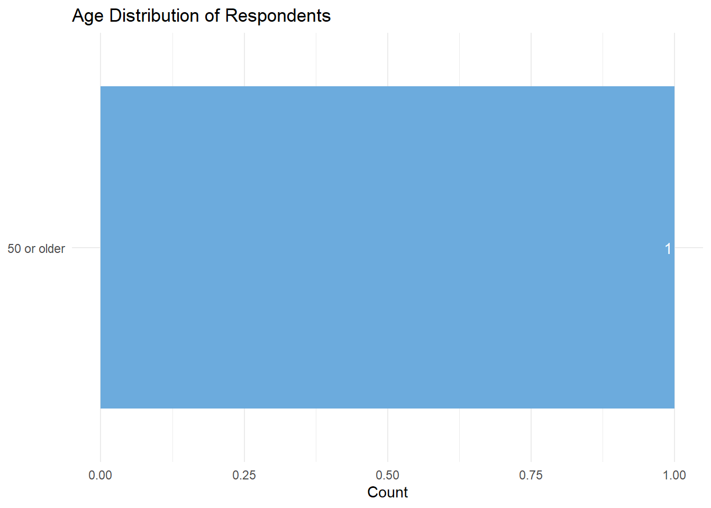
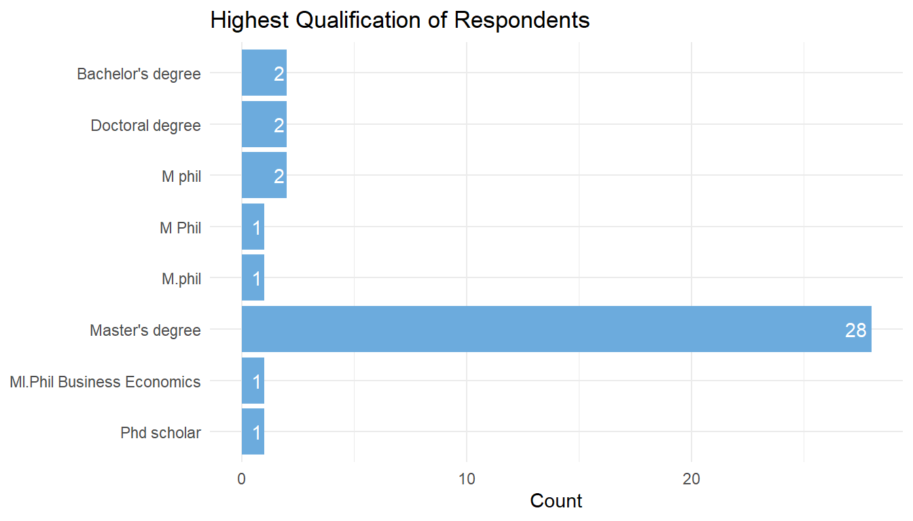
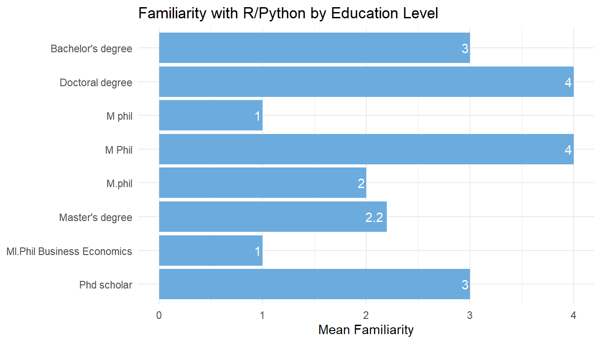
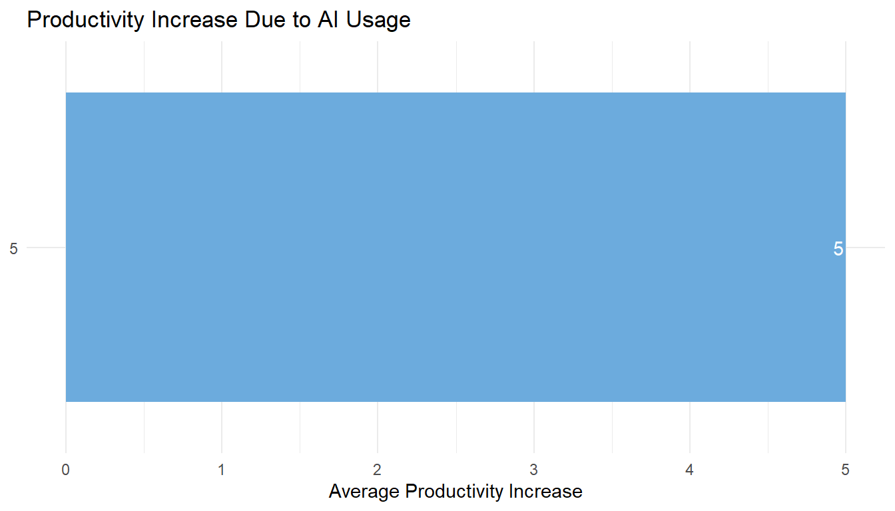

Error in `gs4_auth()`:
! Can't get Google credentials.
ℹ Are you running googlesheets4 in a non-interactive session? Consider:
• Call `gs4_deauth()` to prevent the attempt to get credentials.
• Call `gs4_auth()` directly with all necessary specifics.
ℹ See gargle's "Non-interactive auth" vignette for more details:
ℹ <https://gargle.r-lib.org/articles/non-interactive-auth.html>Link new sheet and have codes for added questions as well
About our Respondents
We conducted a survey on November 17, 2025. We received responses from 38 people.
Age
The youngest respondent was 24 years old, and the oldest was 56. The mean age was 34.6 years.
Age Distribution

Education

Gender
# A tibble: 2 × 2
Gender Count
<chr> <int>
1 man 29
2 woman 9Locations
Respondents listed the location of their primary residence. The map below shows their locations.
Familiarity with R/Python
Respondents rated their familiarity with R/Python as 2.3 on a 5-point scale.
Familiarity by Education Level

Interest in Learning R/Python
Respondents rated their interest in learning R/Python as 4.7 on a 5-point scale.
Interest by Age and Education Level
Error in `palette()`:
! Insufficient values in manual scale. 8 needed but only 4 provided.AI Usage and Productivity
